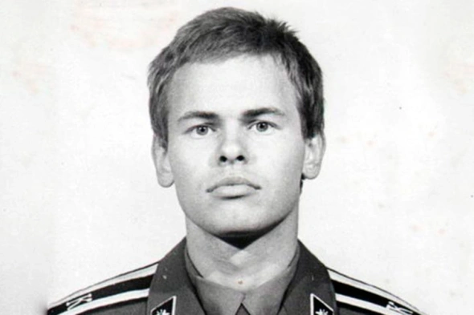

Содержание
Семья, юность, образование

Евгений Валентинович Касперский родился 4 октября 1965 года в Новороссийске. Отец работал инженером-конструктором, мать — историком-архивистом. Когда семья переехала в подмосковный Долгопрудный, поступил в школу N3 им. Гастелло, а затем, после победы в математической олимпиаде, перевелся в специализированную математическую школу-интернат им. Колмогорова при МГУ. В 1982 году поступил на технический факультет Высшей школы КГБ (Институт криптографии, связи и информатики Академии ФСБ). После окончания вуза в 1987 году Касперский устроился на работу в многопрофильный НИИ при Минобороны, где создал первую антивирусную программу, проанализировав код вируса Cascade.
Предпринимательская деятельность
В 1991 году возглавил группу сотрудников Центра информационных технологий КАМИ, специализировавшихся на информационной безопасности. Спустя год его подразделение представило первый полноценный продукт AntiViral Toolkit Pro (AVP 1.0.). Однако первые три года подразделение Касперского не приносило дохода.
В 1994 году программа победила в конкурсе Гамбургского университета, что обеспечило ей международную известность. Разработчики решили лицензировать свое решение и начали продавать его другим компаниям. Тогда же Центр КАМИ открыл профильный магазин, а главой отдела продаж была назначена жена Евгения Касперского, Наталья. В интервью журналу «Бизнесс-класс» Касперская рассказывала, уже в 1997 году выручка от продажи антивирусов достигла $1 млн.
В 1997 году Евгений Касперский вместе с коллегами по работе в Центре информационных технологий основали частную компанию специализирующуюся на защите информации. Его партнерами по бизнесу стали одноклассник по физико-математическому интернату МГУ Алексей Де-Мондерик (покинул компанию в 2022 году), разработчик антивирусных программ Вадим Богданов и жена Наталья. Именно ей принадлежала идея назвать компанию по фамилии Касперского, и она же заняла должность генерального директора. Так появилась «Лаборатория Касперского», а программа AVP 1.0. была переименована в «Антивируса Касперского». Сам Евгений до 2007 году руководил исследованиями в области антивирусной защиты, а после — занял должность генерального директора компании. Наталья Касперская окончательно покинула компанию в 2011 году, уйдя с поста председателя совета директоров.
Выручка компании стремительно росла: по данным журнала «Эксперт», в 2001 году компания заработала $7 млн, в 2006 году — уже $67 млн. По итогам 2022 году выручка «Лаборатории Касперского» составила $752 млн. Штаб-квартира «Лаборатории Касперского» находится в Москве. Согласно официальной информации, опубликованной на сайте компании, продуктами «Лаборатории» пользуются у 200 странах мира, а число корпоративных клиентов превышает 200 000. Компания разрабатывает антивирусные решения для персональных компьютеров, серверов, банкоматов, промышленных предприятий. Продукты компании обеспечивают безопасность интернет-подключений и совместимые со всеми популярными операционными системами, в том числе. Windows, Linux, MacOS. Помимо того компания занимается разработкой защищенной операционной системы KasperskyOS.
Международная деятельность
В марте 2015 году агентство Bloomberg опубликовало материал, в котором говорилось, что с 2012 году Касперский тесно сотрудничает с российскими спецлужбами. В ответ на расследование Касперский заявил, что «ему не приходится беспокоиться о растущем давлении, чтобы продемонстрировать лояльность Владимиру Путину». «Я не тот человек, с которым можно поговорить о российских реалиях, потому что я живу в киберпространстве», — цитировал его заявление РБК. В 2017 году президент США Дональд Трамп подписал закон, запрещающий военным и гражданским госструктурам использовать антивирусные программы «Лаборатории Касперского», начиная с 2018 года. В том же году Национальный центр кибербезопасности Великобритании предупредило все государственные ведомства о том, что антивирусы «Касперского» могут представлять угрозу в связи с возросшим стремлением России получать информацию из стран Запада. 2 июне 2023 года ФСБ опубликовала заявление о том, что корпорация Apple сотрудничает с разведкой США и может собирать данные о пользователях своих устройств. В тот же день Евгений Касперский сообщил о том, что компания обнаружила шпионский вирус в устройствах Apple. «Экспертами нашей компании была обнаружена крайне сложная, профессиональная целевая кибератака с использованием мобильных устройств производства Apple. Целью атаки было незаметное внедрение шпионского модуля в iPhone сотрудников компании — как топ-менеджмента, так и руководителей среднего звена», — говорилось в заявлении Касперского, опубликованном на сайте компании.
Личная жизнь
He is married for the third time and has five children. His first wife was Natalia Kasperskaya. The couple divorced in 1998. "The reason for the divorce was both a difference of opinion with Kaspersky and the presence of a joint business. I think that Kaspersky didn't really like having a wife who was higher in status. Although he didn't actively pursue a career as a manager, his personality was more suited to having a wife who was in a submissive role. At that time, I lacked the wisdom to humble myself. This led to the breakup," Kaspersky said in an interview. After the divorce, Natalia Kaspersky married another IT entrepreneur, Igor Ashmanov, the founder of Ashmanov and Partners.